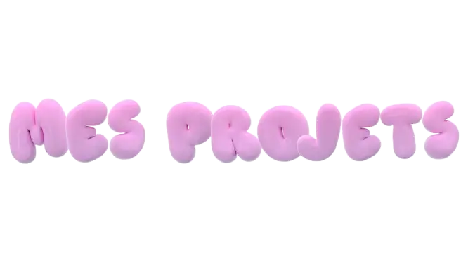

Ici, je vous présente une sélection de projets qui reflètent ma passion pour le développement web, les applications mobiles et même quelques jeux interactifs. Chaque réalisation est le fruit d'une réflexion minutieuse et d'une volonté constante d'innover. N'hésitez pas à parcourir mes projets pour découvrir comment je transforme des idées en expériences numériques concrètes.
Tweeter - Reseau social
Site Web
Tweeter est un réseau social inspiré de X offrant les fonctionnalités essentielles comme la publication de messages courts, le suivi d'autres utilisateurs...
LovLy – Plateforme de Rencontres
Site web
LovLy est un projet inspiré des sites de rencontres modernes comme Meetic.
CinemaScoop – Gestion de Billetterie Simplifiée
Site web
CinemaScoop est un projet conçu pour faciliter la gestion de billetterie en ligne
Puissance 4 – Jeu de stratégie
Jeux
Ce projet est une version web du célèbre jeu Puissance 4, conçue pour être jouée directement depuis un navigateur. L’objectif était ...
Morpion – Jeu de réflexion
Jeux
Ce projet est une version web du jeu Morpion (Tic-Tac-Toe), accessible directement depuis un navigateur. L’objectif était de recréer ce jeu...
Quiz Interactif – Testez vos connaissances
Jeux
Ce projetest un jeu de quiz en ligne, conçu pour offrir une expérience ludique et dynamique.L’objectif était de créer une interface intuitive ...
To-Do List – Gestion simple de tâches
Site web
Ce projet est une application web de gestion de tâches, conçue pour aider les utilisateurs à organiser leur quotidien...
Éditeur de texte en ligne
Site web
Ce projet est un éditeur de texte en ligne, conçu pour permettre aux utilisateurs de créer modifier et sauvegarder des documents texte directement dans leur navigateur, sans besoin de logiciels externes.
PMRide – Application de transport et activités
Application mobile IOS
PMRide est un prototype d'application mobile conçu pour aider les personnes en situation de handicap à trouver des activités...

PMRide – Application mobile pour les personnes en situation de handicap

PMRide est un prototype d'application mobile conçu pour aider les personnes en situation de handicap à trouver des activités et des moyens de transport adaptés près de chez elles. L’objectif est de simplifier la recherche d’options accessibles, afin de favoriser la mobilité et l'autonomie.